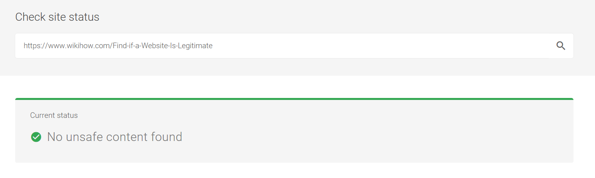

Set to Private
Review privacy settings for your online accounts. Remember that you should control who can see the information you’ve posted online. Social media sites, online stores and gaming platforms all have privacy settings that you can change to minimise your digital footprint. Be aware that the default settings for many online accounts make your information public. Here are a few guides to get you started:
Think before you click!
Clicking on links you find online or in an email, particularly when you don’t know who sent it, can lead to websites full of computer viruses. Anonymous links can also be hidden in adverts, friend requests and pictures. If you receive messages from someone you don’t know, it’s a good idea to delete them without opening them. As a general rule, if you don’t know who posted something, don’t click on it. If you find a web-link that looks legitimate, but you aren’t completely sure, right-click on the link (without opening it) and copy the URL into Google Transparency Report. Websites that are currently safe to visit will look like this:
